| Trang gốc |
Vietnamese, with Unicode Times font |
|
Hành hương - 2006 Bình Anson -ooOoo-
1. Hành hương Sri Lanka - Phần 2 - Thứ Sáu, 10-02-2005: Đến phi trường Donmuang, Bangkok, lúc 7 giờ sáng, gọi taxi trở về nhà bà ngoại của các cháu. Đem quần áo ra giặt, rồi đi bộ đến chợ, rảo quanh, ăn uống lặt vặt. Ghé vào tiệm cafe internet quen thuộc, soát mails, và trò chuyện trên PalTalk. Ghé qua quầy hàng làm khung tượng, đặt thêm vài khung và dây đeo. Khám phá thêm được vài quầy hàng mới, lần sau sẽ thử đặt làm khung. Trở về nhà, nghỉ ngơi, trò chuyện với các người hàng xóm, sửa soạn hành lý cho chuyến du hành tiếp theo. VIỆT NAM Thứ Bảy, 11-02-2005: Rời Bangkok lúc 9 giờ sáng, đáp máy bay của Thai Airways đến phi trường Tân Sơn Nhất lúc 10.30 giờ. Nhân viên phi trường làm việc nhanh và thân thiện, tốt hơn những lần trước. Rất nhiều hành khách từ các nơi đến viếng Việt Nam, tấp nập và nhộn nhịp. Ra khỏi phi trường lúc 11.30 giờ, bạn tôi đến rước và đưa về nhà. 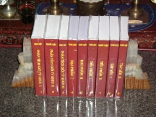Tôi gọi điện thoại các nơi liên hệ để sắp xếp chương trình hành hương cho các ngày kế tiếp. Sư Thiện Đạt và Sư Minh Tấn cho phép tôi có một buổi lễ nhỏ tại chùa Giác Quang vào ngày hôm sau, trong buổi đại lễ Rằm Tháng Giêng Magha Puja, tác bạch đến chư Tăng để hoàn tất dự án in Tạng Luật. Tạng Luật gồm 9 tập, mỗi tập dày từ 600 đến 800 trang, do Sư Indacanda dịch từ Tạng Pàli, hoàn tất và hiệu đính năm 2005. Đây là lần đầu tiên toàn bộ Tạng Luật từ nguồn kinh điển Pàli nguyên thủy được dịch sang Việt ngữ. Một công trình lớn, có lợi ích lâu dài cho tất cả mọi người con Phật. Tối hôm đó, tôi dự buổi tiệc họp mặt các bạn học đồng khóa 2 Kỹ sư Hóa Học (1969-1973), nhân dịp có các bạn từ Mỹ và Singapore về thăm nhà. Bất ngờ hội ngộ, không hẹn trước, nên rất vui. 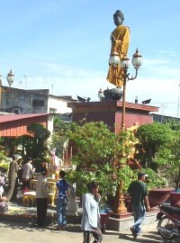Chủ Nhật, 12-02-2005: Đến chùa Giác Quang, bến Bình Đông, Quận 8, lúc 9 giờ sáng. Hôm nay, Phật tử đến dự lễ Rằm Tháng Giêng rất đông. Chùa đang tiến hành xây chánh điện mới, ngay sau tượng Phật lộ thiên, và có kêu gọi các Phật tử hùn phước đóng góp công trình xây dựng nầy. Tôi đem theo 12 bộ Tạng Luật để cúng dường. Khi sắp xếp các bộ nầy trên các mâm tại chánh điện, một số Phật tử đến thăm hỏi và xin cúng dường tịnh tài hùn phước. Tôi rất cảm động và hoan hỷ. Sau đó, tôi cúng dường tất cả các tịnh tài nầy vào quỹ xây dựng chánh điện của chùa. Chương trình buổi lễ gồm có phần Phật tử xin thọ Tam Quy, Ngũ Giới, tiếp theo là kệ thỉnh Pháp sư. Một bài giảng về ý nghĩa ngày lễ. Sau đó là phần để bát chư Tăng. Tiếp theo, khi mọi người trở vào chánh điện, tôi được gọi lên để tác bạch, trình bày dự án ấn tống Tạng Luật và báo cáo công tác in ấn đã hoàn tất. 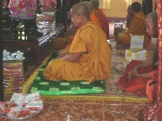Dâng Tạng Luật cúng dường, xin hồi hướng phần phước thanh cao nầy đến dịch giả, đến các thành viên và các thí chủ của dự án, đến mọi loài chúng sinh trong cõi Ta Bà, lòng tôi rất hoan hỷ. Tôi ở lại dùng cơm trưa, trò chuyện với một số anh chị Phật tử quen biết, trong đó có cả bạn bè đến từ Perth. Được Sư Thiện Đạt, trụ trì chùa, cho biết sơ lược về dự án xây chánh điện. Đây là một công trình lớn, đem nhiều lợi lạc cho mọi người, và tôi mong rằng Phật tử khắp nơi sẽ hỗ trợ tích cực để hoàn mãn tốt đẹp. Buổi trưa, tôi đến thăm Sư Giác Hạnh. Sư là một tăng sinh chương trình Tiến sĩ ở Sri Lanka và đã bố trí tổ chức cho chuyến hành hương của tôi tại đảo quốc này. Sư về Việt Nam thăm gia đình, và tôi nhờ Sư mang 2 bộ Tạng Luật về Huế cúng dường. 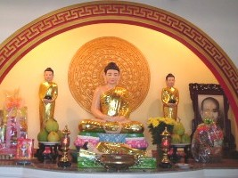Tối hôm đó, sau khi ăn cơm tại nhà, tôi đến viếng chùa Kỳ Viên, Quận 3. Gặp được quý Sư Tăng Định, Bửu Chánh, Giác Trí, Thiện Minh, Tuệ Quyền, Chánh Định, Chí Thành. Đêm nay có thọ đầu đà, thuyết pháp, và chiêm bái xá lợi. Tôi gặp được vài bạn đạo mà từ trước chỉ quen qua mạng PalTalk của Internet. Phật tử tham dự rất đông. Xe gắn máy để chật các lề đường quanh chùa. Tôi gọi xe ôm, rời chùa, về nhà lúc 11 giờ đêm. Trời mát lạnh, tâm nhẹ nhàng, thư thái. Thứ Hai, 13-02-2005: Buổi sáng tôi đón xe ôm, đến tòa soạn báo Giác Ngộ, đường Nguyễn Đình Chiểu (ngày xưa là Phan Đình Phùng), quận 3. Tòa soạn mới được xây dựng, khang trang, đẹp. Tôi vào văn phòng đóng tiền mua báo cho mình và cho vài bạn hữu khác ở hải ngoại. Các anh chị nhân viên vẫn là người cũ, còn vị ni cô thường phụ trách thu ngân đã xuất ngoại, du học ở Miến Điện. Ghé sang quầy sách kế bên, kinh sách in đẹp và phong phú, đa dạng. 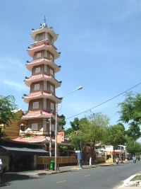Trời còn mát, nên tôi rảo bước đi bộ dọc theo đường Nguyễn Đình Chiểu về hướng chùa Xá Lợi. Ngắm nhìn quang cảnh chung quanh, so sánh với những gì mình còn giữ trong ký ức. Quá nhiều thay đổi theo năm tháng. Xe cộ nhiều và ồn ào, nhiều tòa nhà mới xây, các cửa tiệm trưng bày nhiều loại hàng hóa, đa dạng, nhưng lộn xộn, không ngăn nắp. Hình như mọi người đang mãi mê lo kinh doanh làm giàu, không quan tâm đến mỹ quan đường phố. Cũng may là vẫn còn những hàng cây xanh cao mát. Mọi người quá tất bật, bận rộn với đời sống. Có lẽ chỉ một mình tôi là người đi bộ lang thang, thong thả. Tôi đến viếng chùa Xá Lợi lúc 12 giờ trưa. Chánh điện và thư viện đều đóng cửa. Chùa vắng lặng. Chỉ có một quầy sách tư nhân là hoạt động. Mua vài quyển sách mới, rồi đến băng đá sân chùa, ngồi đọc và thưởng thức khung cảnh an lành, thanh nhẹ của buổi trưa. Trong này là nơi tu tĩnh, thanh tịnh của chốn thiền môn. Bên kia đường là các quán nhậu ồn ào. Thật là tương phản. Tôi gọi điện thoại đến một người bạn để cùng đi ăn trưa. Bữa cơm phần, gọi là "cơm văn phòng", đơn giản, ngon và rẻ tiền. Rồi cùng nhau đi uống cà phê, tham quan thành phố, sắp đặt chương trình để đi miền Tây. Tối hôm đó, tôi đến viếng chùa Changtarangsay, đường Trần Quốc Thảo (trước kia là Trương Minh Giảng), quận 3, cúng dường một bộ Tạng Luật đến Sư Thi, một vị sư trẻ rất nhiệt tình, gốc Rạch Giá. Sư cho tôi một danh sách địa chỉ các chùa Nam tông ở Sóc Trăng và vài thông tin cần thiết. Ghé vào tiệm Phở Hòa ở cuối đường Pasteur. Lần này, hương vị không còn ngon và sự tiếp đãi cũng không tốt như những năm trước. Thứ Ba, 14-02-2005: Rời nhà lúc 5:30 sáng. Ăn phở gà gần chợ Bến Thành, đón các bạn từ Hoa Kỳ, để cùng đi về miền Tây. Đoàn hành hương gồm 10 người, với 2 chiếc xe hơi. Rời Sài Gòn, theo Quốc lộ 1A, tiến về Bến Lức. Khi qua cầu, nhìn sang các thửa ruộng bên trái, bâng khuâng nhớ về quê ngoại, nhớ lúc còn nhỏ cùng mẹ đi bộ trên con đường đất về thăm ông bà cố, ông bà ngoại. Xe qua Tân An, Tân Hiệp, Trung Lương, rồi rẽ trái vào một con đường mới, tiến về Chợ Gạo mà không cần phải đi qua thành phố Mỹ Tho. 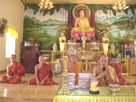Ghé vào một chợ nhỏ ven đường. Mua một ít trái cây và một bó nhang. Chúng tôi về làng Đồng Sơn, Gò Công Tây. Thắp hương lễ lạy phần mộ của ông bà, cha mẹ, và bà con họ hàng đã qua đời. Trở ra đường cái, ghé vào quán nước bên đường uống cà phê. Bà chủ quán vẫn còn đó, và vẫn còn nhớ chúng tôi. Vào Mỹ Tho, ghé thăm chùa Pháp Bảo. Sư Bửu Hiền vừa đi họp trở về. Thật là một phước duyên, vì chúng tôi đến bất ngờ, không hẹn trước. Sư mời chúng tôi ở lại dùng cơm trưa. Chúng tôi cùng vào trai đường, ăn cơm tại hai bàn tròn, còn chư Tăng dùng cơm ở một bàn khác. Thức ăn đơn giản nhưng rất ngon. Sau đó, chúng tôi vào chánh điện, tác bạch và dâng 2 bộ Tạng Luật cùng một số kinh sách khác, và một ít tịnh tài. Chư Tăng đọc kinh chúc phúc. Cả đoàn kính cẩn chấp tay, lắng tâm ghi nhận, lòng hoan hỷ. Rời Mỹ Tho, tiếp tục lên đường, qua cầu Mỹ Thuận và phà Cần Thơ. Đứng trên boong tàu, ngắm nhìn sông nước Cửu Long, khung cảnh quen thuộc từ bao năm qua, lòng rộn ràng như một người trở lại chốn xưa. Dừng xe tại thành phố Cần Thơ để rước Sư Lý Hùng Suvana, một vị sư trẻ, năng động và vui tính, để nhờ Sư hướng dẫn đi thăm các chùa Phật giáo Nam tông Khmer. 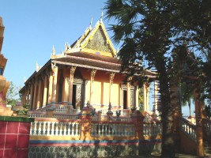Tiếp tục hành trình đến thị xã Sóc Trăng, chúng tôi đến chùa Klaeng. Đây là một ngôi chùa cổ xưa, xây dựng năm 1533, với chánh điện rộng lớn. Chùa có nhiều dãy tăng xá, là nơi trú ngụ của các tăng sinh từ nhiều tỉnh miền Tây đến tu học. Đến gặp Hòa thượng Tăng Nô, trụ trì chùa. Chúng tôi dâng 6 bộ Tạng Luật, rồi được Ngài hướng dẫn sang viếng trường Trung cấp Phật học Pàli bên cạnh. Hiện có khoảng 200 tăng sinh đang học trong 4 lớp tại trường. Chúng tôi được vị hiệu trưởng hướng dẫn đi thăm từng lớp học, và chúng tôi cúng dường tịnh tài đến mỗi vị tăng sinh đang học tại đó. Trở lại chánh điện chùa Klaeng, chúng tôi vào nghe chư Tăng tụng kinh buổi chiều, giọng trầm đều, nhịp nhàng, truyền cảm. Chăm chú lắng nghe với tâm thanh tịnh, theo dõi từng thanh âm của buổi tụng, mọi người hầu như cảm nhận được một sự linh thiêng, một lòng tín thành rất khó diễn tả. 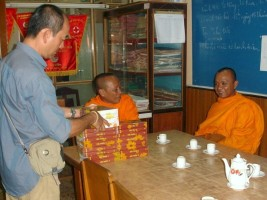Tối hôm đó, đoàn hành hương nghỉ tại khách sạn Ngọc Sương. Khách sạn rộng rãi, đầy đủ tiện nghi, với phòng giải trí bi da, bóng bàn, hồ tắm, ca nhạc, nhà hàng. Chúng tôi lên xe đi tham quan thành phố, ăn tối, rồi uống cà phê tại một quán mới, trang bị sang trọng không thua gì các quán cà phê nổi tiếng ở Sài Gòn. Thứ Tư, 15-02-2005: Sau khi dùng điểm tâm tại khách sạn, chúng tôi đến huyện Mỹ Xuyên, viếng chùa Bưng-ton-xa, xây dựng năm 1890, trụ trì là Sư Thạch Sông. Tại đây, chúng tôi đặt bát và tịnh tài đến 40 vị Tăng, yên lặng bước đi chậm rãi theo một hàng dài trong sân chùa. Rồi vào chánh điện làm lễ cúng dường Tạng Luật. Được chư Tăng tụng kinh chúc phúc bằng tiếng Pàli, cả đoàn rất hoan hỷ. Đối với một số bạn hữu trong đoàn, chưa từng tiếp xúc với truyền thống Theravada, đây là những kinh nghiệm tâm linh đầu tiên không bao giờ quên. 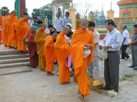Sau đó chúng tôi đến viếng chùa Sê-ray Ta-mơn, xây dựng năm 1615, trụ trì là Sư Triệu Sợi, cúng dường một bộ Tạng Luật. Đây cũng là nơi Sư Tha Dhammapalo, mà tôi đã gặp ở Sri Lanka, xuất gia tu học và Sư có giới thiệu chúng tôi đến đó. Chùa đang trùng tu, với trường học mới để dạy cho các em của các gia đình Phật tử trong vùng. Cổng chùa cũng được tu bổ lại, rất đẹp. Chúng tôi đến viếng chùa Sro-long, xây dựng năm 1815. Còn gọi là chùa Chén Kiểu vì mặt ngoài chánh điện được trang trí bằng các mảnh gốm sứ từ các loại chén kiểu. Ngồi uống nước ngoài sân chùa, chúng tôi thưởng thức món chuối luộc và khoai lùn, là các thức ăn phổ thông của người trong vùng. Sau khi lễ lạy Phật trong chánh điện, chúng tôi định lên xe ra đi thì ngài Hòa thượng trụ trì, Sư Quách Mến, vừa về đến. Chúng tôi đã từng gặp Ngài trong mấy năm trước. Ngài lớn tuổi nhưng rất vui tính. Chúng tôi dâng Tạng Luật đến Ngài, và được Ngài chúc phúc trước khi lên đường. 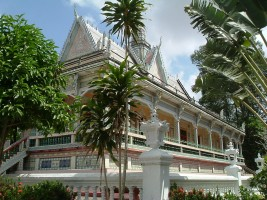Đến chùa Om-puo-year, xây dựng năm 1813, trụ trì là Sư Lâm Sương. Còn gọi là chùa Nhu Gia vì nằm cạnh sông Nhu Gia. Chúng tôi dâng Tạng Luật đến ngài, và được biết ngài cũng đã thỉnh được một bộ Tam Tạng bằng tiếng Pali-Khmer từ xứ Campuchia. Chánh điện mới vừa được xây dựng, do một số Phật tử hải ngoại đóng góp hùn phước. Tại nền chánh điện cũ, vẫn còn tượng Phật nguyên thủy, và ngài đang xây một mái che, để bảo vệ tượng Phật. Theo lời ngài, chư Thiên có mách bảo, không cho phép di dời tượng Phật đó vào trong chánh điện mới. Ngài đưa chúng tôi đến xem thuyền Ngor, một loại thuyền đua của người Khmer, với 50 người chèo. Năm nào đội đua thuyền của chùa này cũng đoạt giải nhất. Sau bữa cơm trưa tại quán ăn bên đường, chúng tôi đến viếng chùa Trà-cuôn (Prêt-trà-cuôn), xây dựng năm 1780. Còn gọi là chùa Chín Cửa, vì mỗi bên của chánh điện có 9 cửa. Chúng tôi dâng một bộ Tạng Luật, và được sư trụ trì hướng dẫn lên lầu, xem phòng ngủ của ngài Hòa thượng tiền nhiệm, đã viên tịch, nhưng rất có uy tín trong vùng khi Ngài còn sống, và đã có nhiều công đức vận động trùng tu chùa nầy. 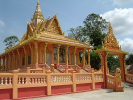Đến huyện Mỹ Tú, chúng tôi viếng chùa Buôn-prês-phek, xây dựng năm 1537, trụ trì là Sư Sơn Chinh. Còn gọi là chùa Bốn Mặt, vì trong chánh điện có thờ một tượng Phật nhỏ, có 4 mặt. Theo lời ngài trụ trì, ngày xưa, trong mùa nước lớn, tượng Phật 4 mặt trôi dạt đến sân chùa, và được đem thờ tại đó. Chúng tôi vào lễ Phật tại chánh điện và cúng dường tịnh tài. Trở về thị xã Sóc Trăng, chúng tôi viếng chùa Som-rong, xây dựng năm 1725, trụ trì là Sư Trần Phiên. Lễ Phật và cúng dường tịnh tài. Đoàn hành hương nghỉ tại khách sạn Ngọc Sương, và ăn tối tại đó. Thứ Năm, 16-02-2005: Sau khi điểm tâm, chúng tôi đến huyện Mỹ Tú. Hẹn gặp chị Hơ, một Phật tử thuần thành, để nhờ chị hướng dẫn đến viếng chùa Pro-leang. Chùa xây dựng năm 1749, trụ trì là Sư Hoàng Hùng. Chúng tôi đi xe đến xã Thuận Mỹ, rồi thuê một đội xe ôm đưa vào địa điểm bên bờ kênh đối diện với chùa. Muốn vào chùa phải đi qua cây cầu khỉ cheo leo, trơn trợt. Tuy nhiên, một gia đình Phật tử gần đó đã dùng xuồng để đưa chúng tôi qua kênh. Lúc trước, chúng tôi đã kêu gọi hùn phước để thay thế 2 cây cầu khỉ bằng cầu xi măng; và sẽ xúc tiến sau khi chính quyền địa phương hoàn tất công tác nạo vét kênh trong vùng. Sư trụ trì hướng dẫn đi xem chánh điện đang xây cất dở dang vì thiếu kinh phí. Chúng tôi đề nghị chùa lập một kế hoạch chi tiết từng giai đoạn với ước tính kinh phí rõ ràng, để dễ kêu gọi hùn phước. Nhà bếp của chùa cũng đã hư nát, cần phải tu bổ gấp rút, nên chúng tôi đã hùn phước ngay tại chỗ, để chùa có thể xúc tiến xây cất một nhà bếp mới. 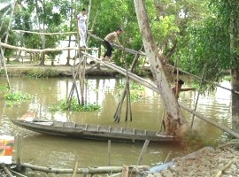Trở lại chợ Mỹ Tú, chúng tôi được chị Hơ đãi món bún mắm nổi tiếng của Sóc Trăng; và mua lạp xưởng tươi, bánh in, bánh pía để mang về Sài Gòn làm quà. Rời Sóc Trăng, đi về Cần Thơ, chúng tôi viếng chùa Munirangsay ở đại lộ Hòa Bình. Dâng Tạng Luật và kinh sách đến ngài trụ trì. Sẵn dịp có sự hiện diện của Sư Đào Như (Laddhappanno), trụ trì chùa Bodhisamrong, chúng tôi cúng dường Sư một bộ Tạng Luật, và được Sư giảng cho một bài pháp ngắn. Thật là một phước duyên. Rời Cần Thơ, khi đi ngang qua thị trấn Cai Lậy, chúng tôi ghé vào viếng chùa Đông Phương, trụ trì là Sư Chí Thành. Có một lò thiêu và nghĩa địa cạnh chùa. Sân sau chánh điện nay được tôn trí thêm nhiều tượng Phật lộ thiên, đẹp hơn so với lần viếng thăm vào năm 2004. Sư rất vui khi thấy đoàn chúng tôi đến thăm chùa. Sư cho biết đã từng đi Miến Điện tham dự các khóa tu thiền. Chúng tôi có hứa sẽ hùn phước giúp Sư tu bổ chánh điện. Trên đường về Sài Gòn, đoàn dừng xe tại Long An, dùng cơm chiều với món cháo cá lóc nổi tiếng. Hương vị thơm ngon, giá cả phải chăng. Đến Sài Gòn khoảng 8.30 giờ tối, kết thúc chuyến đi dâng Tạng Luật và tham quan miền Tây với kết quả tốt đẹp. Thứ Sáu, 17-02-2005: Sáng nay, tôi đến chùa Kỳ Viên đón Sư Thiện Minh để nhờ Sư hướng dẫn thăm viếng các chùa trong thành phố Sài Gòn. Đến chùa Ấn Quang, đường Sư Vạn Hạnh, quận 10. Hôm nay có một cuộc họp của Thành hội Phật giáo, rất nhiều vị trụ trì tham dự. Tôi được Hòa thượng Nhật Quang tiếp ở phòng khách và dâng Tạng Luật đến Hòa thượng. Sau đó, tôi được đưa lên lầu đến thăm Hòa thượng Trí Quảng. Tôi cúng dường một bộ Tạng Luật đến Ngài, và được tặng đĩa CD-MP3 thu âm các bài thuyết giảng của ngài. 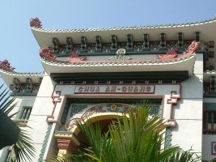Chúng tôi đến chùa Từ Nghiêm gần đó. Đây là chùa của các vị Ni. Dâng Tạng Luật đến vị phó trụ trì là Ni trưởng Như Hải. Đến chùa Giác Ngộ, quận 10, thăm Thầy Nhật Từ. Sau khi dâng Tạng Luật, chúng tôi được Thầy mời ở lại dùng cơm trưa. Cơm chay, rất ngon. Gặp một anh Phật tử từ Hoa Kỳ về thăm chùa. Thầy Nhật Từ tặng cho một bộ đĩa CD-MP3 gồm các bài pháp thoại của Thầy, và cho biết thêm các thông tin về thủ tục xin giấy phép in kinh sách và địa chỉ các cơ sở Phật giáo ở Hà Nội để cúng dường Tạng Luật. Sau đó, chúng tôi đến Thiền viện Quảng Đức. Văn phòng đóng cửa để nghỉ trưa. Nhưng chúng tôi cũng gặp được một vị Đại đức là bạn đồng học với Sư Thiện Minh. Chúng tôi nhờ Thầy chuyển bộ Tạng Luật đến thư viện của Thiền viện. Đến chùa Vĩnh Nghiêm gần đó, gặp vị Đại đức tại văn phòng liên lạc của chùa. Chúng tôi nhờ Thầy chuyển bộ Tạng Luật cúng dường vào thư viện. Được biết có Sư Tâm Hạnh hiện đang ở tại chùa, chúng tôi đến khu tăng xá để thăm Sư. Thật là duyên hạnh ngộ bất ngờ. Lần nào về Việt Nam, tôi đều đến thăm Sư, để trao đổi các công việc Phật sự và dịch thuật. Tôi dâng Tạng Luật đến Sư, và nhờ Sư chuyển 4 bộ Tạng Luật cúng dường đến Phật học viện Nha Trang và các vị Trưởng lão tôn túc khác. 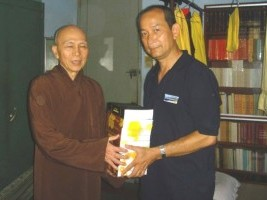Chúng tôi đến thăm Thượng tọa Phước Sơn tại Thiền viện Vạn Hạnh, đường Nguyễn Kiệm, Phú Nhuận. Dù đang nghĩ trưa nhưng Thầy cũng tiếp chúng tôi. Đây là lần đầu tiên tôi được gặp Thầy, mặc dù rất hâm mộ và đã đăng nhiều tác phẩm, bài viết của Thầy trên trang web. Thầy là vị giảng sư nổi tiếng về Luật học. Tôi cúng dường bộ Tạng Luật, và Thầy rất vui khi được biết toàn bộ Tạng Luật Pàli nay đã được dịch sang Việt ngữ. Tôi được Thầy tặng cho các quyển sách vừa mới xuất bản. Tối hôm đó, tôi đến ăn cơm tại nhà một người bạn. Sau đó, ghé vào quán Café Chiêu, đường Cao Thắng, gần rạp hát Đại Đồng. Đây là một nơi quen thuộc từ hơn 35 năm trước, khi còn là sinh viên đại học. Mặt trước vẫn như cũ, nhưng phía sau đã xây lên nhiều tầng, trang trí rất đẹp. Đặc biệt là khách có thể chọn loại café đậm đặc hay vừa phải, tùy theo sở thích. Thứ Bảy, 18-02-2005: Ăn điểm tâm bánh cuốn nóng ở đường Tú Xương, gần nhà. Rồi đến văn phòng hãng máy bay Thai Airways để đổi vé đi Bangkok, và văn phòng Pacific Airlines để mua vé đi Hà Nội. 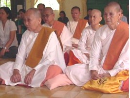Đến chùa Phật Bảo, quận Tân Bình, lúc 2:00 giờ trưa, dự lễ cầu siêu cho thân nhân. Chúng tôi có thỉnh Sư Chánh Niệm, trụ trì, chư Tăng (4 vị), và 20 vị Tu nữ. Trước đó, chúng tôi đã liên lạc với Sư cô Hiền (Diệu Tâm), chùa Diệu Quang, để nhờ Sư cô giúp tổ chức. Ngoài gia đình chúng tôi, còn có sự tham dự của một số đạo hữu mà tôi đã quen qua mạng PalTalk. Chúng tôi dâng Tạng Luật đến ngài trụ trì, và tứ vật dụng đến chư Tăng Ni. Sư Chánh Niệm giảng một bài pháp về "Bố thí và vai trò của các Tu nữ". Mọi người rất hoan hỷ. Buổi lễ hoàn mãn lúc 4:00 giờ. Tối hôm đó, tôi đến ăn thử món bánh xèo nổi tiếng ở đường Đinh Công Tráng, khu Tân Định. Bánh chiên mỏng, dòn, nhưng quá nhiều dầu. Trong đó chỉ có vài con tôm đã được chiên trước, không còn chất ngọt. Nước chấm nhạt nhẽo. Tôi thất vọng vì bánh không ngon như nhiều người đã ca tụng. Chủ Nhật, 19-02-2005: Sáng sớm, đoàn hành hương đến phi trường Tân Sơn Nhất và ăn điểm tâm tại đó. Máy bay cất cánh lúc 7:30, và đáp xuống phi trường Nội Bài lúc 9:30 sáng. Trở lại đây sau hơn 10 năm, phi trường hoàn toàn đổi mới, đẹp, to, hiện đại, và ngăn nắp hơn xưa. Một người bạn học cũ, nay có văn phòng kinh doanh tại Hà Nội, đem xe đến đón để cùng đi tham quan Móng Cái. Rời phi trường Nội Bài, chúng tôi không đi về hướng Hà Nội, nhưng theo đường vành đai, vào quốc lộ 18, tiến đến Bắc Ninh. Qua Phả Lại, Đông Triều, Uông Bí, tiến về Hạ Long. Hai bên đường vẫn thấy được cảnh xưa, các thửa ruộng nhỏ bé, bờ đê xiên xéo, phân chia theo từng hộ gia đình. Nhiều nhà mới xây theo kiểu cách hiện đại, lẫn lộn với các nhà cổ xưa. 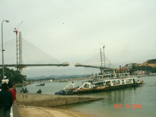Lên phà Bãi Cháy để sang Hòn Gai. Hiện đang xây dựng một cây cầu treo rất cao, bắc ngang qua vịnh. Khi hoàn tất, có lẽ người dân sẽ không dùng phà nữa. Xe đi dọc theo các mỏ than lộ thiên, bụi than phủ khắp nơi. Đây là một nguồn năng lượng rất quan trọng, cung cấp cho các nhà máy nhiệt điện. Dừng uống café tại một quán bên đường, trên đồi cao, mát lạnh. Quầy bán quà lưu niệm trưng bày toàn sản phẩm Trung quốc. Nhân viên bán hàng nói tiếng Tàu rất giỏi, và cho biết có nhiều khách Trung quốc sang du lịch trong vùng. Đến Móng Cái lúc chiều tối. Trời lạnh buốt. Chúng tôi cất hành lý tại nhà khách Công Đoàn. Ăn tối tại một tiệm ăn gần đó, với các thức ăn hải sản rất ngon miệng, bà chủ vui tính, và trong số nhân viên phục vụ có cả một thanh niên gốc người Sài Gòn. Thứ Hai, 20-02-2005: Ăn sáng món bún bò tại một tiệm ăn gần nhà khách. Chủ quán và nhân viên đều là người Huế. Khách đến ăn rất đông. Hương vị rất ngon, không thua gì bún bò Huế ở Sài Gòn. Uống cà phê tại quán Cafe Trung Nguyên. Hầu như nơi nào trong toàn xứ Việt cũng đều có tiệm café nầy. 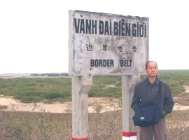Đến tham quan cửa khẩu Móng Cái, biên giới Việt-Trung. Khách qua lại tấp nập. Mua một cặp kính râm của một anh Tàu bán dạo. Rảo bước vào chợ Móng Cái, đa số hàng hóa là sản phẩm Trung Quốc. Nhiều người bán hàng là dân Trung Quốc, sáng sang đây bán hàng, tối quay về bên kia. Tại một quầy bán đồ chơi trẻ em, người chủ nói tiếng Việt rất giỏi, và khoe anh ta đã đừng vào buôn bán tại Sài Gòn. Tôi mua một chiếc áo sơ mi và một cái nón, sản phẩm của Việt Nam, tại một cửa hàng của hai chị em người Thái Bình, vui tính. Lên xe đi thăm Trà Cổ, đến tận điểm mốc phân chia biên giới. Ghé vào thăm nhà thờ Trà Cổ với kiểu kiến trúc xưa từ thời Pháp thuộc. Tôi đã thấy hình nhà thờ trên Internet, nay mới có dịp được vào thăm. Ra bờ biển, quan sát đoàn người đang kéo lưới vào bờ, nam nữ lẫn lộn. Làm việc nhịp nhàng đồng bộ. Trời lạnh buốt, chịu đựng gió lạnh như thế thì thật là khổ cực. 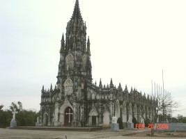Rời Móng Cái lúc 11:00 giờ. Chúng tôi ghé vào một quán bên đường tại Tiên Yên để ăn cơm trưa lúc 12:00 giờ. Khách đến ăn trưa rất đông, ồn ào, uyên náo. Cũng như người Tàu, dường như người Việt chúng ta thích nói chuyện ồn ào, cười đùa khi ăn uống. Thức ăn đơn giản, nhưng rất vừa miệng. Tiến về Cẩm Phả, Hòn Gai, qua phà, vào Hạ Long. Sang thăm đảo Tuần Châu, dừng xe, uống café. Đây là khu du lịch vừa mới thành lập, thiết kế rất đẹp. Xe tiếp tục đến Hải Phòng, Hải Dương, theo đường cao tốc về Hà Nội. Hai bên đường là các nhà máy, các khu công nghiệp. Toàn là các cơ sở mới, xây dựng khang trang, thiết kế có quy củ. Đến Hà Nội lúc 7:00 giờ tối. Thành phố nhiều thay đổi, với nhiều đường mới, nhiều xe hơi và xe gắn máy hơn mười năm trước. Chúng tôi đến nghỉ tại khách sạn Hồng Ngọc, đường Lê Văn Can, trong khu phố cổ. Điện thoại liên lạc và hẹn gặp một chị Phật tử thuần thành, đã từng liên lạc trao đổi qua Internet. Chúng tôi rảo bộ ra Hồ Hoàn Kiếm, uống café và ăn bánh ngọt tại nhà thủy tạ, một nơi quen thuộc mà tôi thường đến ăn kem vào mùa hè. Sau đó, rảo bộ đi quanh, quan sát sinh hoạt ban đêm, ăn phở gà tại một quán nhỏ bên đường, rồi về khách sạn. 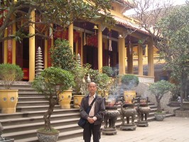Thứ Ba, 21-02-2005: Sau khi ăn sáng tại khách sạn, đoàn chúng tôi đến viếng chùa Quán Sứ. Vào chánh điện lễ Phật, rồi bước sang thư viện kế bên. Chúng tôi được các chị Phật tử điều hành thư viện tiếp đón và trình bày về các hoạt động của thư viện. Rất hoan hỷ khi biết nhu cầu tìm hiểu và đọc kinh sách Phật giáo của các Phật tử của chùa. Chúng tôi hứa sẽ tiếp tục gửi tặng thư viện các kinh sách mới mỗi khi có ấn tống ở Sài Gòn. Tôi cũng được các chị đưa đến gặp Thầy Gia Quang, Phó ban Phật giáo Quốc tế, và Thầy Thanh Duệ, Phó viện trưởng Học viện Phật giáo. Nhân dịp nầy, chúng tôi cúng dường 4 bộ Tạng Luật đến quý Thầy và thư viện chùa Quán Sứ. Sau đó, chúng tôi đến thăm Nhà xuất bản Tôn Giáo, đường Trần Duy Hưng. Văn phòng tọa lạc trong khu đô thị mới, với nhiều đường mới, hoặc các đường cũ đã mở rộng. Đi dọc theo Quốc lộ 1, theo đường xe lửa Bắc-Nam, chúng tôi đến viếng chùa Pháp Vân, quận Hoàng Mai. Đây là một trong các ngôi chùa cổ xưa ở ngoại ô Hà Nội. Ngoài kia xe cộ ồn ào, bên trong chùa vắng lặng, yên tĩnh, trang nghiêm. 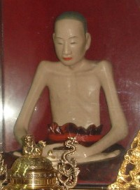Vào tỉnh Hà Tây, chúng tôi đến viếng chùa Đậu, thuộc huyện Thường Tín. Chùa còn có tên là chùa Pháp Vũ. Ngày xưa, vùng nầy có 4 chùa đặt tên theo Tứ Pháp, theo nghĩa mây, mưa, sấm, chớp: Pháp Vân (nay thuộc thành phố Hà Nội), Pháp Vũ, Pháp Lôi, và Pháp Điện, được xây dựng từ thời nhà Lý, vào thế kỷ XI. Trong chùa có thờ nhục thân của Thiền sư Đạo Chân (Vũ Khắc Minh) và Đạo Tâm (Vũ Khắc Trường). Chúng tôi gặp được vị trụ trì là Thầy Thanh Nhung. Ăn trưa tại một quán bên đường ở Thường Tín. Trên đường đi, chúng tôi thấy nhiều chùa làng đã được tu bổ, và nhiều quán ăn. Tiến về thị xã Hà Đông, chúng tôi đi ngang qua khu nghĩa trang Văn Điển, một vùng đất rộng lớn với rất nhiều ngôi mộ. Đến thăm chùa Trầm, một ngôi chùa nhỏ đã được tu bổ. Cạnh chùa là một đồi nhỏ, chân đồi có một hang sâu, bên trong có vài di tích thờ phượng. Sau đó, đoàn đến viếng chùa Trăm Gian tọa lạc trên ngọn đồi cao, nhìn xuống con sông nhỏ. Bên trong sân chùa có rất nhiều mái nhà nhỏ, thấp. Chùa có một phòng phát thuốc miễn phí cho dân làng. Tiếp tục hành trình, chúng tôi đến viếng chùa Thầy, vùng Sài Sơn. Khách hành hương đi lễ chùa rất đông. Bên cạnh là một hồ nước lớn, rất thơ mộng. Chùa tổ chức rất chu đáo, có người hướng dẫn, thuyết minh cho từng nhóm khách, về lịch sử của chùa. Bên trong chánh điện có thờ nhục thân của Thiền sư Đạo Hạnh. Trở ra đường Láng - Hòa Lạc, chúng tôi quay về Hà Nội, đi ngang qua khu vận động Mỹ Đình. 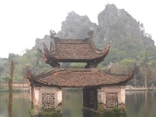Tối hôm đó, chúng tôi thưởng thức món chả cá Lã Vọng, nổi tiếng của Hà Nội. Chả cá ngon với hương vị thật đặc biệt, dùng với các loại rau thơm và mắm tôm. Tuy nhiên, tôi thấy món chả cá có quá nhiều dầu. Sau đó, chúng tôi bách bộ ngắm nhìn quang cảnh khu phố, đi dạo bờ hồ, xem đền Ngọc Sơn, rồi đến uống café tại một tòa nhà cao tầng, quan sát sinh hoạt ban đêm. Thứ Tư, 22-02-2005: Sau khi điểm tâm, chúng tôi đến viếng đền Trấn Võ, rồi tham quan hồ Trúc Bạch và Hồ Tây. Dù trời mưa lâm râm, đoàn vẫn cố gắng đi viếng phủ Tây Hồ. Đường vào phủ đã được mở rộng, các quán bán bánh tôm và ốc luộc - đặc sản trong vùng - đã được sửa sang lại, ngăn nắp và sạch sẽ hơn xưa. Buổi trưa, chúng tôi ra phi trường Nội Bài, máy bay cất cánh lúc 1:30 trưa, trở vào Sài Gòn. Thứ Năm 23-02-2005: Hôm nay, tôi đi lang thang trong thành phố Sài Gòn. Đến chợ Bến Thành mua ít quà mang về cho gia đình. Chợ sạch sẽ, trật tự, an ninh, bán nhiều loại hàng hóa, nhất là các sản phẩm dành cho du khách. Buổi trưa đi ăn cơm với vài người bạn cũ của thời trung học, quán cơm đường Thi Sách, phía sau Điện Lực. Đến khu Tôn Thất Tùng tìm mua các chương trình vi tính. Buổi tối đi ăn cơm họp mặt bạn bè cũ tại nhà hàng Đông Hồ, trong khu Kỳ Hòa. 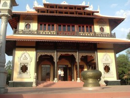Thứ Sáu, 24-02-2005: Như dự định, chúng tôi lên đường đi thăm các chùa vùng Long Thành - Bà Rịa. Đến chùa Bửu Long, quận 9, thăm các vị Tu nữ và bàn việc giúp xây cầu cho xóm nghèo ở Cần Thơ và việc ấn tống kinh nhật tụng. Viếng chùa Tam Phước, Long Thành, nhưng hôm đó, vị trụ trì là Sư Chánh Định đi vắng. Tôi vào lễ lạy trong chánh điện vừa mới xây cất, khang trang, rộng rãi. Tôi gửi lại một ít tiền để làm học bổng cho các em học sinh nghèo trong xã, như các năm trước, và xin hùn phước để xây một tượng Phật mới cho chánh điện. 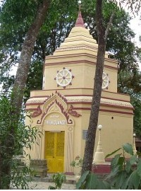Sau đó, đến viếng thiền viện Viên Không, Núi Dinh, Bà Rịa. Thửa đất cạnh chùa đang được phát triển thành khu du lịch. Không biết trong tương lại, không khí yên tĩnh của thiền viện sẽ bị ảnh hưởng ra sao. Tôi gặp Sư Pháp Thông, rất hoan hỷ khi được biết Sư đã cho in và phổ biến các sách mà Sư đã dịch trong các năm qua. Trở lại Long Thành, chúng tôi viếng chùa Thiền Quang II. Đây là lần đầu tiên tôi đến chùa nầy, mặc dù có đăng hình ảnh trên trang web. Trụ trì là Sư Chí Tâm. Khuôn viên rộng rãi, nhiều cây xanh. Chùa đang xây tường rào, để ngừa việc lấn chiếm đất của các gia đình bên cạnh. Chúng tôi làm lễ tác bạch dâng Tạng Luật, chư Tăng rất hoan hỷ và chúc phúc. Vào thăm Cô nhi viện Diệu Pháp. Trục giao thông chính trong xã đang được mở rộng. Chánh điện đã được tu bổ, rất đẹp. Ni sư Huệ Đức, trụ trì chùa, rất vui khi gặp chúng tôi, và mời vào nhà khách uống nước. Thị giả cũng là một em cô nhi, sống tại chùa từ bé, và vừa tốt nghiệp đại học. Chúng tôi cúng dường tịnh tài vào quỹ điều hành cô nhi viện. 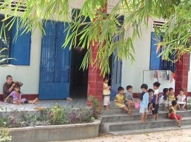Ghé qua chùa Y Sơn. Gặp được vị trụ trì là Sư Phước Quang, và tình cờ được gặp Sư Minh Tịnh. Sư Minh Tịnh đã từng gửi cho tôi nhiều hình ảnh của các chùa, và các bộ font Việt-Pàli theo chuẩn Unicode. Chúng tôi đến viếng thiền viện Phước sơn. Năm nay, tôi thấy có rất nhiều tượng Phật màu trắng, tư thế ngồi thiền, đặt rãi rác trong sân chùa, với các vết sáp đỏ chảy từ các cây nến đốt trong đêm lễ hội trước đó. Có lẽ ban tổ chức nên nghiên cứu đặt thêm các đĩa chân đèn, để tránh tạo ra các vết sáp hoen ố này. Thiền đường đã được tu sửa, mở rộng, rất khang trang. Thêm nhiều tịnh thất mới. Hôm ấy đang có một khóa thiền do Sư Hộ Niệm hướng dẫn, Tăng Ni và cư sĩ tham dự rất đông. 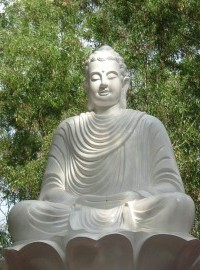Buổi tối, tôi trở lại chùa Changtarangsay, gặp vị trụ trì là Sư Danh Lung và dâng một bộ Tạng Luật. Thứ Bảy, 25-02-2005: Hôm nay đi thăm chùa vùng Định Quán. Cùng đi với đoàn có thêm hai vị Sư cô Như Thảo và Phước Thủy, ni sinh của Học viện Phật giáo. Chúng tôi viếng chùa Linh Phú. Chánh điện lớn, khuôn viên rất rộng, trải dài từ quốc lộ đến ngọn núi phía sau. Trên núi có vài liêu cốc nhỏ để chư Tăng tịnh tu. Vị trụ trì là Sư Pháp Căn. Tôi cũng gặp được Sư Pháp Huyền, trụ trì chùa Phước Huệ trong vùng. Sau khi tham quan cảnh chùa, chúng tôi dâng một bộ Tạng Luật. Ăn trưa tại Định Quán, rồi đến viếng chùa Từ Thiện, nhưng vị trụ trì đi vắng. Chánh điện và tăng xá đã được xây mới, đẹp và khang trang. Sau khi lễ Phật, chúng tôi lên đường, theo Quốc lộ 1A, trở về hướng Biên Hòa. 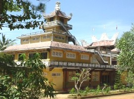Vào thành phố Biên Hòa, hướng về khu núi đá Bửu Long, đoàn đến viếng chùa Bửu Đức, tọa lạc bên bờ sông Đồng Nai. Gặp được Sư Giác Chánh, trụ trì chùa. Cũng gặp được Sư Pháp Đăng, trụ trì chùa Từ Thiện mà chúng tôi vừa đến viếng lúc trưa; và Sư cô Diệu Tịnh. Các vị nầy là giảng sư thường xuyên của room Diệu Pháp trên PalTalk. Sư Giác Chánh đưa chúng tôi tham quan cảnh chùa, và giới thiệu Tàng Kinh Các đang được xây dựng. Đây là một nhà nhỏ, dùng để lưu Tam Tạng Thánh Điển. Đến xem lối đi kinh hành của chư Tăng, ở phía sau chùa, gần bờ sông, có mái che, sau rặng dừa rợp mát. 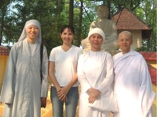Đến Thủ Đức, chúng tôi viếng chùa Bửu Quang. Đây là ngôi chùa đầu tiên của Phật giáo Nguyên thủy Việt Nam, xây dựng năm 1938. Vị quản tự hiện nay là Sư Thiện Minh, vị giảng sư quen thuộc trên PalTalk. Tôi rất hoan hỷ khi thấy hầu hết các cơ sở trong chùa đã được tu sửa, tốt đẹp và ấm cúng hơn những năm trước. Trong khuôn viên có tôn trí một tượng mới, bằng đá, cao 4 mét, rất đẹp. Đúng giờ khóa lễ tụng kinh chiều, nghe tiếng chư Tăng tụng kinh, thật là phước duyên! Sư cũng cho biết hàng tuần đều có thuyết pháp và hành thiền, với nhiều Phật tử tham dự. Chúng tôi cúng dường tịnh tài vào quỹ từ thiện Hương Minh Hiểu. Chủ Nhật, 26-02-2005: Đoàn hành hương đi viếng các chùa Nam tông Khmer trong tỉnh Tây Ninh. Ăn sáng ở Hóc Môn, tại một quán ăn nổi tiếng về món bún giò heo, hương vị Nam bộ. Hôm nay là ngày nghỉ, du khách đến ăn rất đông, ra vào tấp nập. 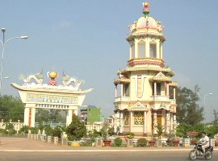Đến Tây Ninh, vào viếng Tòa Thánh Cao Đài. Sau hơn 30 năm tôi mới trở lại đây. Khách hành hương đến rất đông. Tổ chức điều hành rất tốt, đường xá bên trong rộng thênh thang, ngăn nắp, sạch sẽ. Các cơ sở, đền đài đều được sơn sửa, màu sắc phong phú, rất đẹp. Hỏi thăm đường đi, xe chạy vòng theo chân núi Bà Đen, đến chùa Khe-đon (Sa-đo). Chùa Khe-đon, xây dựng năm 1930, có tên chính thức là Pathumgirirangsay (Bothumkirirangsay), có nghĩa là Liên Sơn Quang, trong đó Pathumgiri (Liên Sơn) là tên của núi Bà Đen. Có lẽ chữ Bà-đen phát âm từ chữ Pathum hay Bothum, hoa sen. Sau chùa có cội bồ đề khá lớn, tôn trí tượng Phật niết bàn màu trắng. Chánh điện đang trùng tu, công trình xây dựng dở dang, và chùa đang kêu gọi hùn phước đóng góp. Chúng tôi cúng dường tịnh tài, được Sư trụ trì chúc phúc và tặng cho một sợi dây Sima trắng và tôi đeo ngay vào cườm tay. Sư giới thiệu hai chị Phật tử để cùng đi hướng dẫn đoàn đến viếng các chùa khác trong tỉnh: - Chùa Soài (Sáp-rất), xã Hòa Thành, huyện Châu Thành, có hai vị sư trẻ. Chánh điện đơn sơ, vách đất, mái tôn. - Chùa Pa-ma, huyện Châu thành, giáp biên giới Campuchia. Vị trụ trì rất trẻ. Chánh điện xây tạm thời giống như một túp lều tranh, trong khi chờ đợi xây chánh điện chính thức, không có vách. Sư ngụ tại một căn nhà sàn, đơn giản. - Chùa Ta-lơi, còn có tên là chùa Hiệp Phước vì tọa lạc tại ấp Hiệp Phước, huyện Châu Thành. Chánh điện mới, với các cột gỗ to, cao, mang từ Campuchia sang. Nhìn chung, chùa có các cơ sở khang trang, xem như là đẹp nhất trong 6 chùa Nam tông Khmer của tỉnh Tây Ninh. 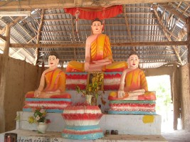- Chùa Chum-rúp, huyện Tân Biên, có trai đường là một căn nhà sàn bằng gỗ rộng lớn. Bên trong có thờ tượng Phật thỉnh từ Campuchia, theo dáng vẻ của triều đại Angkor. - Chùa Kà-ốt, còn có tên là Kirisat Trây Menchey, huyện Tân Châu, có chánh điện kiến trúc Khmer rất đẹp, giống như các chùa miền Tây. Trụ trì là một vị sư lớn tuổi, hiền từ. Ngoài sân chùa có cội bồ đề và một tháp nhỏ. Trên đường về, ghé vào Trảng Bàng, ăn món bánh tráng phơi sương đặc biệt, kèm thịt luộc, nem chua, với nhiều loại rau thơm mà tôi chưa từng biết đến. Khách đến ăn đông nghẹt vào ngày cuối tuần. Thứ Hai, 27-02-2005: Tôi dành trọn ngày tham quan sông nước Sài Gòn và các vùng lân cận. Đi tàu dọc theo sông ra đến cửa biển. Bến cảng tấp nập bốc dở hàng hóa. Hai bờ sông vẫn còn nhiều loại dừa nước, rừng tràm, rừng đước. Thứ Ba, 28-02-2005: Rời Sài Gòn sáng sớm, đoàn hành hương đến Cần Thơ lúc 7.30 giờ. Ăn điểm tâm tại một quán phở gần trung tâm thành phố, hương vị thơm ngon không thua gì các quán phở ở Sài Gòn. Đến rước sư Lý Hùng để cùng đi Sóc Trăng. Trở lại chùa Pro-leang để xem lại việc xây nhà bếp cho chùa. Mọi người đều bận rộn, chư Tăng và Phật tử trong xóm cùng làm việc, phụ giúp nhóm thợ xây dựng. Các trụ cột xi măng đã được dựng lên và các bức tường bằng gạch đã lên cao. Sư trụ trì cho biết tổng cộng chi phí khi hoàn tất sẽ là 20 triệu VND. 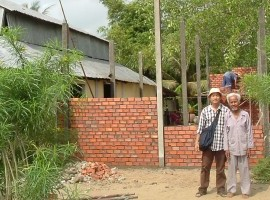Rời chùa, chúng tôi trở lại Cần Thơ, dừng xe tại Cái Tắc để ăn cơm trưa. Vào thành phố, chúng tôi đến viếng chùa Pitukhosarangsay, đường Mạc Đĩnh Chi, phường An Cư, quận Ninh Kiều, mà Sư Lý Hùng là trụ trì. Chùa là nơi tu học của nhiều vị Tỳ khưu trẻ, và một số sinh viên Phật tử vùng quê cũng đến ngụ tại đó để đi học trong thành phố. Sư cho biết hiện có khoảng 50 người đang lưu trú tại chùa, tu sĩ lẫn sinh viên. Chùa đang thành lập một dự án tu bổ chánh điện. Đến thị trấn Ô Môn, viếng chùa Sanvorpothinhen, trụ trì là Sư Lý Chương. Sư là thầy tế độ của Sư Lý Hùng. Đây là một ngôi chùa cổ, với nhiều tượng Phật bằng gỗ rất quý. Phía sau chùa là một lò thiêu, với nhiều tháp nhỏ chung quanh, theo kiến trúc Khmer. Chư Tăng và một số Phật tử đang đúc các tấm bê tông để sửa soạn làm cầu cho dân chúng trong vùng. Sư Lý Hùng đưa chúng tôi đi xem một con đường đất dọc bờ kênh, với những cây cầu bằng ván gỗ thô sơ, bất tiện và nguy hiểm cho việc đi lại, nhất là vào mùa mưa trơn trợt. Chúng tôi hứa sẽ vận động kêu gọi hùn phước để làm cầu xi măng thay thế các cầu gỗ đó. 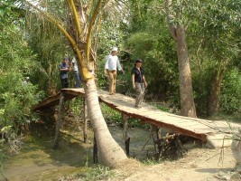Lên đường về Sài Gòn, vẫn không quên ghé Long An thưởng thức món cháo cá quen thuộc. Chúng tôi đến nhà lúc 8 giờ tối. Thứ Tư, 01-03-2005: Ăn sáng tại quán Bạch Dương, đường Sương Nguyệt Ánh, quận 1. Lang thang tham quan thành phố, đi dọc theo đường Điện Biên Phủ (trước là đường Phan Thanh Giản), ngắm nhìn quang cảnh hai bên, xe cộ ồn ào, sinh hoạt tất bật của người dân. Bệnh viện Bình Dân, bệnh viện Saint Paul, trường Gia Long (nay là trường Nguyễn Thị Minh Khai), nghĩa trang Mạc Đĩnh Chi (nay là công viên Lê Văn Tám), đường Phan Liêm, khu chợ Đakao, bánh cuốn Tây Hồ, rạp Văn Hoa, chợ Tân Định, v.v. vẫn còn đó, nhưng hai bên đường có thêm rất nhiều nhà mới, cao tầng, và các cửa hàng đủ loại. Trưa về nhà, sửa soạn hành lý để hôm sau lên đường. Thứ Năm, 02-03-2005: Ăn sáng tại một quán cơm tấm ở đường Bà Hạt, quận 10. Nhờ một đạo hữu gửi tịnh tài đóng góp vào quỹ điều hành cô nhi viện Pháp Võ, Nhà Bè. Trưa hôm đó, cùng với vợ chồng người bạn, chúng tôi ra sân bay Tân Sơn Nhất, lên đường sang Bangkok, Thái Lan. Về đến thị trấn Donmuang khoảng 3.00 giờ trưa, vào nhà cất hành lý. Tôi đưa vợ chồng người bạn ra thăm chợ. Khi trở về, mới nhận ra rằng mình đã lấy nhầm va-li! Tôi vội vàng đi xe ôm trở ra phi trường để đổi lại. Cũng may là va-li của tôi vẫn còn đó, và tôi làm thủ tục đổi hành lý nhanh chóng, dễ dàng. Cô nhân viên phụ trách phòng hành lý rất vui tính, cho biết mỗi ngày cũng có nhiều du khách lấy nhầm va-li như thế. Buổi tối, chúng tôi thưởng thức món cơm gà luộc, thường gọi là cơm gà Hải Nam. Quan sát hàng quán sinh hoạt ban đêm. Ghé vào tiệm café internet, soát và gửi mails. * 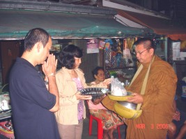Thứ Sáu, 03-04-2006: Chúng tôi thức dậy sớm, ra đứng đầu ngõ, để bát cho chư Tăng đi khất thực. Đây lần đầu tiên, vợ chồng bạn tôi được để bát như thế và cả hai đều rất hoan hỷ. Rảo bộ ra chợ, ăn điểm tâm bằng bánh giò cháo quảy chiên dòn với sữa đậu nành nóng. Sau đó, chúng tôi đón xe vào thành phố Bangkok, đến viếng chùa Dhammamongkol. Buổi trưa, viếng đền Erawan, thờ Phạm thiên Brahma với tượng 4 mặt, một nơi linh thiêng mà dân chúng thường đến lễ bái, cầu xin. Ngoài Phật giáo, dân tộc Thái cũng chịu nhiều ảnh hưởng của văn hóa Ấn Độ. Đi bộ tham quan khu thương mại Siam Quare, rồi đến xem hàng hóa ở thương xá MBK. Đây là một thương xá rất lớn, với nhiều tầng, bày bán đủ loại sản phẩm, rất đông khách hàng mua sắm, người địa phương lẫn du khách. Ăn trưa ở đó, rồi đón xe trở về Donmuang.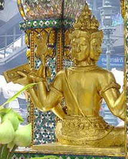 Buổi tối, chúng tôi hẹn gặp Hòa thượng Phairor, chùa Wat Mahathat, để đưa ngài sang viếng Perth, theo lời mời của một số Phật tử Thái. Gọi xe taxi để vào phi trường, rời Thái Lan lúc nửa đêm, trở về Úc. Thứ Bảy, 04-03-2005: Đến phi trường Perth, Tây Úc, lúc 8 giờ sáng. Kết thúc chuyến hành hương 5 tuần lễ. * N hìn lại, trong chuyến hành hương năm nay, tại Sri Lanka, chúng tôi đã đến viếng 15 ngôi chùa, và chiêm bái nhiều di tích, địa điểm quan trọng của lịch sử Phật giáo tại xứ nầy. Tại Việt Nam, chúng tôi đã đi dâng Tạng Luật nhiều nơi trong Nam ngoài Bắc, thăm viếng và lễ Phật tại 46 ngôi chùa, và thực hiện một số công tác từ thiện. Trong thời gian ngắn dừng chân tại Bangkok, chúng tôi đến lễ Phật tại 2 ngôi chùa.Chúng tôi thành tâm ghi nhận và tri ân quý tôn đức Tăng Ni và quý anh chị đạo hữu, trong nước và hải ngoại, đã hết lòng hỗ trợ, khuyến khích chúng tôi trong chuyến hành hương với nhiều kết quả tốt đẹp. Xin hồi hướng phần phước thanh cao nầy đến cho tất cả các vị ấy. Sadhu, Sadhu, Sadhu! Bình Anson -ooOoo- Xem: Phần 1: Sri Lanka | Hình ảnh Hành hương Ghi chú:
[Trở
về trang Thư Mục] |